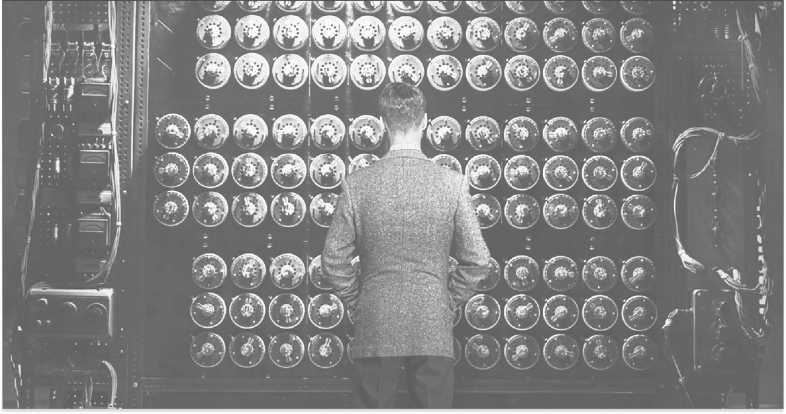

A BASE DA COMPUTAÇÃO MODERNA
A Máquina de Turing foi uma das maiores criações da história da computação, desenvolvida pelo matemático britânico Alan Turing em 1936.
Ela não era uma máquina física, mas sim um modelo teórico criado para explicar como os computadores poderiam funcionar e resolver problemas de forma lógica e automática.

A Máquina de Turing funciona com uma fita infinita dividida em partes, onde cada parte pode conter um símbolo. Um leitor percorre essa fita, lendo e escrevendo símbolos conforme instruções pré-definidas.
Esse processo imita o modo como um computador executa algoritmos — passo a passo, de forma lógica e precisa.
A criação da Máquina de Turing foi um marco na história da computação, pois introduziu a ideia de que qualquer problema matemático poderia ser resolvido por meio de regras bem definidas.
Esse conceito deu origem ao que hoje chamamos de programas de computador e foi fundamental para o desenvolvimento da informática moderna.

Mesmo sendo apenas teórica, a Máquina de Turing inspirou o funcionamento dos computadores reais. Todo software, desde os mais simples até os mais complexos, segue o mesmo princípio: executar instruções lógicas em sequência. O modelo de Turing continua sendo a base conceitual da ciência da computação até hoje.